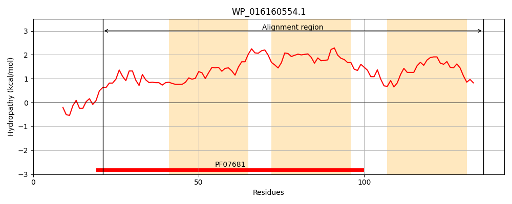
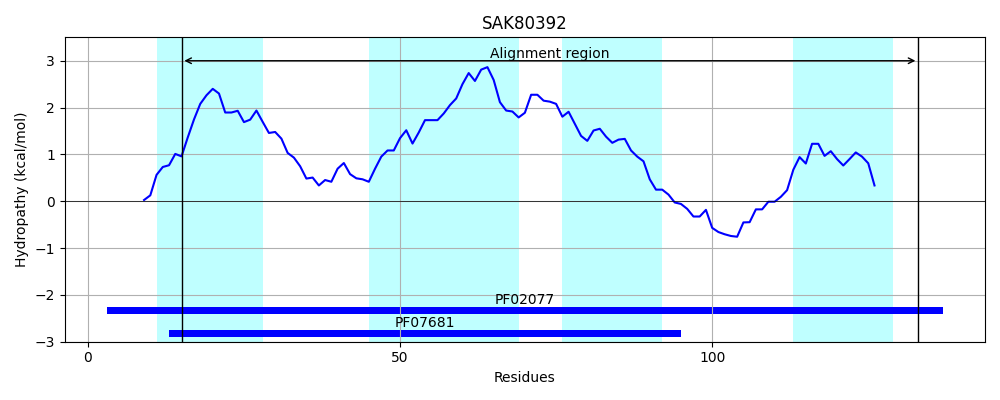
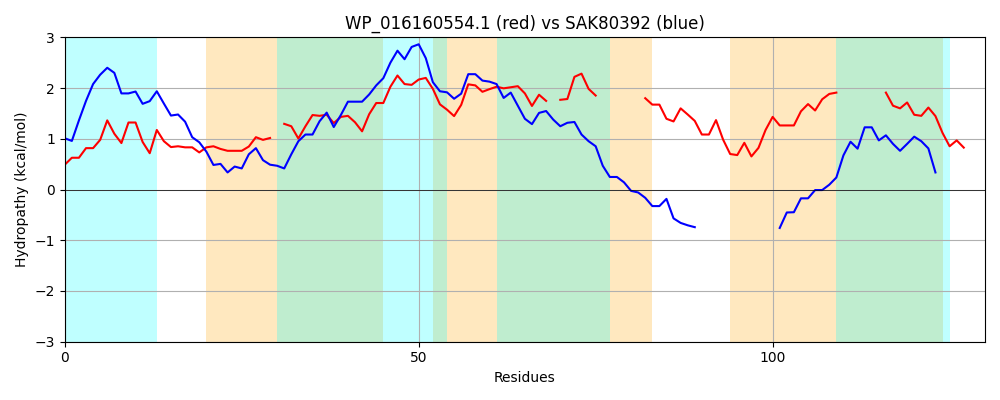

Hit Accession: SAK80392
Hit TCID: 9.B.214.2.2
Hit Description: gnl|BL_ORD_ID|20095 gnl|TC-DB|SAK80392.1|9.B.214.2.2 DoxX family protein [Burkholderia ptereochthonis]
Mach Len: 130
e:0.000159
Query TMS Count : 3
Hit TMS Count: 4
TMS-Overlap Score: 2.350000
Predicted Substrates:None
BLAST Alignment:
Score: 89 , Bit scores: 38 bits, E-value: 1.6e-04, Alignment length: 130, Percentage identity: 28
Query: 21 LLLRLAVGGLMLFHGLHKLLDGVGGISGML-VAKGLPGFIAYGVLVGEVVAPCLLILGVLTRPAALVLA-FTMVVA------WLMVGLGKTFALDAVGAWAIENLVYFFV------GALAIALLGAGRYS 136
L+ R+ + L + G KL+ G +S M V P F A +V E+V ++LG+ TRP AL+LA +T+ A W M G + N + F+ G + +++ G G+YS
Sbjct: 15 LVARVLLMILFVLFGWQKLIGFSGTVSYMTSVGAPAPTFSAIIAVVMELVVGIAIVLGLFTRPLALLLALYTLGTALIGHHYWTMEGAAR-----------YANTINFYKNISIMGGLILLSITGPGKYS 133 | Protein Hydropathy Plots: |
|---|
|  |  |
Pairwise Alignment-Hydropathy Plot:
|
|---|
|  |